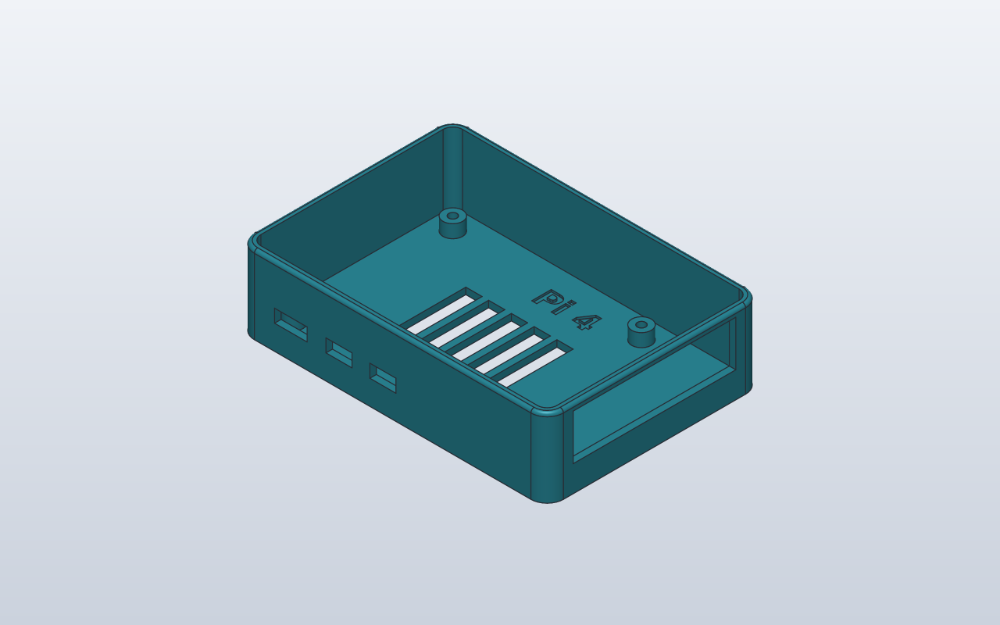

Model preview

Native SolidCraft image, matching this source revision.
Reconstructs the Raspberry Pi 4 video using a rounded open-top shell, mounting bosses, connector cuts, floor vents, Pi 4 lettering and PETG material.
Files
Download the source and the generated command plan.
Command JSON describes CAD actions; it is not an already-saved .sc design.
Construction stages
- Outline — centered 95 × 66 mm footprint
- Extrude — height 24 mm
- Fillet — four vertical corners R5
- Shell — open top, 2 mm wall
- Fillet upper rim — R1
- Four mounting bosses — Ø6 / Ø2.5, 58 × 49 pattern
- Sketch and cut USB-C and dual micro-HDMI ports
- Sketch and cut USB / Ethernet opening
- Sketch and cut five floor ventilation slots
- Engrave Pi 4 text, 0.6 mm
- Assign PETG physical material
Python model
class PlasticEnclosurePi:
# SolidCraft 0.8 Raspberry Pi 4 video: board 85 × 56, case +10 mm.
board_w = 85.0
board_d = 56.0
height = 24.0
wall = 2.0
def build(self):
width = self.board_w + 10.0
depth = self.board_d + 10.0
enclosure = Box(width, depth, self.height)
enclosure = enclosure.fillet(5.0, edges=Edges.VERTICAL)
enclosure = enclosure.shell(self.wall, open=Faces.TOP)
# The video rounds one upper rim edge, R1.
enclosure = enclosure.fillet(
1.0, edges=[(0, depth / 2, self.height)]
)
# Board mounting holes: one corner 3.5 mm in from board edges,
# then a 58 × 49 mm rectangular pattern. Native screw bosses.
for x, y in (
(-39.0, -24.5),
(19.0, -24.5),
(-39.0, 24.5),
(19.0, 24.5),
):
boss = Boss(d=6.0, h=4.0, hole_d=2.5).attach(
enclosure, parent=Anchor.INNER_BOTTOM, offset=(x, y)
)
enclosure = enclosure + boss
# Front (-Y): USB-C and two micro-HDMI openings.
# Local XZ coordinates are (world X, world Z). A negative
# extrusion points into the case from the front face.
with Sketch(
name="Pi ports", on=enclosure, plane="XZ",
origin=(0, -(depth / 2), 0),
) as ports:
for x, half_width in ((-31.3, 5.0), (-16.5, 4.0), (-3.0, 4.0)):
ports.add(
Rectangle2D(half_width * 2, 4.0),
offset=(x - half_width, 7.5),
)
enclosure = enclosure - ports.extrude(
self.wall, direction=Direction.NEGATIVE
)
# Right (+X) end: the combined USB-A and Ethernet window.
# Local YZ coordinates are (world Y, world Z).
with Sketch(
name="USB and Ethernet", on=enclosure, plane="YZ",
origin=(width / 2, 0, 0),
) as end_ports:
end_ports.add(Rectangle2D(50.0, 14.0), offset=(-25.0, 8.0))
enclosure = enclosure - end_ports.extrude(
self.wall, direction=Direction.NEGATIVE
)
# Five separate slots, spaced 7 mm along X, through the floor.
with Sketch(
name="Floor vents", on=enclosure, plane="XY",
origin=(0, 0, self.wall),
) as vents:
for i in range(5):
vents.add(
Rectangle2D(5.0, 28.0),
offset=(-22.0 + i * 7.0, -16.5),
)
enclosure = enclosure - vents.extrude(
self.wall, direction=Direction.NEGATIVE
)
# Recess "Pi 4" 0.6 mm into the inner floor of the case.
with Sketch(
name="Pi 4 engraving", on=enclosure, plane="XY",
origin=(0, 0, self.wall),
) as label:
label.add(
Text2D("Pi 4", height=6.0, font="DejaVu Sans Bold"),
offset=(-9.0, 18.0),
)
enclosure = enclosure - label.extrude(
0.6, direction=Direction.NEGATIVE
)
# The recording assigns a physical design material, not just a color.
enclosure = enclosure.with_material(
"PETG", density_g_cm3=1.27, color="#2a8696"
)
enclosure
PlasticEnclosurePi()
Native SolidCraft command sequence
- Named CAD parameterparameters.add · name: board_w
{ "command": "parameters.add", "params": { "name": "board_w", "expression": "85", "unit": "mm" } } - Named CAD parameterparameters.add · name: board_d
{ "command": "parameters.add", "params": { "name": "board_d", "expression": "56", "unit": "mm" } } - Named CAD parameterparameters.add · name: height
{ "command": "parameters.add", "params": { "name": "height", "expression": "24", "unit": "mm" } } - Named CAD parameterparameters.add · name: wall
{ "command": "parameters.add", "params": { "name": "wall", "expression": "2", "unit": "mm" } } - Create sketchsketch.create · name: PlasticEnclosurePi footprint, plane: XY
{ "command": "sketch.create", "params": { "plane": "XY", "name": "PlasticEnclosurePi footprint" } } - Rectanglesketch.rectangle.two_point
{ "command": "sketch.rectangle.two_point", "params": { "p0": [ "-(board_w + 10 mm) / 2", "-(board_d + 10 mm) / 2" ], "p1": [ "(board_w + 10 mm) / 2", "(board_d + 10 mm) / 2" ] } } - Finish sketchsketch.finish
{ "command": "sketch.finish", "params": {} } - Extrusion / cutsolid.extrude · body_name: PlasticEnclosurePi
{ "command": "solid.extrude", "params": { "distance": "height", "body_name": "PlasticEnclosurePi" } } - Rounded edgesolid.fillet
{ "command": "solid.fillet", "params": { "edges": [ [ -47.5, -33.0, 12.0 ], [ 47.5, -33.0, 12.0 ], [ 47.5, 33.0, 12.0 ], [ -47.5, 33.0, 12.0 ] ], "radius": 5.0, "body": "PlasticEnclosurePi" } } - Shell / hollow bodysolid.shell
{ "command": "solid.shell", "params": { "faces": [ [ 0.0, 0.0, 24.0 ] ], "thickness": "wall", "body": "PlasticEnclosurePi" } } - Rounded edgesolid.fillet
{ "command": "solid.fillet", "params": { "edges": [ [ 0.0, 33.0, 24.0 ] ], "radius": 1.0, "body": "PlasticEnclosurePi" } } - Plastic screw bossplastic.boss
{ "command": "plastic.boss", "params": { "position": [ -39.0, -24.5, 2.0 ], "diameter": 6.0, "height": 4.0, "body": "PlasticEnclosurePi", "hole_diameter": 2.5 } } - Plastic screw bossplastic.boss
{ "command": "plastic.boss", "params": { "position": [ 19.0, -24.5, 2.0 ], "diameter": 6.0, "height": 4.0, "body": "PlasticEnclosurePi", "hole_diameter": 2.5 } } - Plastic screw bossplastic.boss
{ "command": "plastic.boss", "params": { "position": [ -39.0, 24.5, 2.0 ], "diameter": 6.0, "height": 4.0, "body": "PlasticEnclosurePi", "hole_diameter": 2.5 } } - Plastic screw bossplastic.boss
{ "command": "plastic.boss", "params": { "position": [ 19.0, 24.5, 2.0 ], "diameter": 6.0, "height": 4.0, "body": "PlasticEnclosurePi", "hole_diameter": 2.5 } } - Create sketchsketch.create · name: Pi ports, plane: {'origin': [0.0, -33.0, 0.0], 'x_dir': [1, 0, 0], 'y_dir': [0, 0, 1]}
{ "command": "sketch.create", "params": { "plane": { "origin": [ 0.0, -33.0, 0.0 ], "x_dir": [ 1, 0, 0 ], "y_dir": [ 0, 0, 1 ] }, "name": "Pi ports" } } - Rectanglesketch.rectangle.two_point
{ "command": "sketch.rectangle.two_point", "params": { "p0": [ -36.3, 7.5 ], "p1": [ -26.299999999999997, 11.5 ] } } - Rectanglesketch.rectangle.two_point
{ "command": "sketch.rectangle.two_point", "params": { "p0": [ -20.5, 7.5 ], "p1": [ -12.5, 11.5 ] } } - Rectanglesketch.rectangle.two_point
{ "command": "sketch.rectangle.two_point", "params": { "p0": [ -7.0, 7.5 ], "p1": [ 1.0, 11.5 ] } } - Finish sketchsketch.finish
{ "command": "sketch.finish", "params": {} } - Extrusion / cutsolid.extrude · name: Pi ports, direction: negative, operation: cut
{ "command": "solid.extrude", "params": { "operation": "cut", "targets": [ "PlasticEnclosurePi" ], "name": "Pi ports", "distance": "wall", "direction": "negative" } } - Create sketchsketch.create · name: USB and Ethernet, plane: {'origin': [47.5, 0.0, 0.0], 'x_dir': [0, 1, 0], 'y_dir': [0, 0, 1]}
{ "command": "sketch.create", "params": { "plane": { "origin": [ 47.5, 0.0, 0.0 ], "x_dir": [ 0, 1, 0 ], "y_dir": [ 0, 0, 1 ] }, "name": "USB and Ethernet" } } - Rectanglesketch.rectangle.two_point
{ "command": "sketch.rectangle.two_point", "params": { "p0": [ -25.0, 8.0 ], "p1": [ 25.0, 22.0 ] } } - Finish sketchsketch.finish
{ "command": "sketch.finish", "params": {} } - Extrusion / cutsolid.extrude · name: USB and Ethernet, direction: negative, operation: cut
{ "command": "solid.extrude", "params": { "operation": "cut", "targets": [ "PlasticEnclosurePi" ], "name": "USB and Ethernet", "distance": "wall", "direction": "negative" } } - Create sketchsketch.create · name: Floor vents, plane: {'origin': [0.0, 0.0, 2.0], 'x_dir': [1, 0, 0], 'y_dir': [0, 1, 0]}
{ "command": "sketch.create", "params": { "plane": { "origin": [ 0.0, 0.0, 2.0 ], "x_dir": [ 1, 0, 0 ], "y_dir": [ 0, 1, 0 ] }, "name": "Floor vents" } } - Rectanglesketch.rectangle.two_point
{ "command": "sketch.rectangle.two_point", "params": { "p0": [ -22.0, -16.5 ], "p1": [ -17.0, 11.5 ] } } - Rectanglesketch.rectangle.two_point
{ "command": "sketch.rectangle.two_point", "params": { "p0": [ -15.0, -16.5 ], "p1": [ -10.0, 11.5 ] } } - Rectanglesketch.rectangle.two_point
{ "command": "sketch.rectangle.two_point", "params": { "p0": [ -8.0, -16.5 ], "p1": [ -3.0, 11.5 ] } } - Rectanglesketch.rectangle.two_point
{ "command": "sketch.rectangle.two_point", "params": { "p0": [ -1.0, -16.5 ], "p1": [ 4.0, 11.5 ] } } - Rectanglesketch.rectangle.two_point
{ "command": "sketch.rectangle.two_point", "params": { "p0": [ 6.0, -16.5 ], "p1": [ 11.0, 11.5 ] } } - Finish sketchsketch.finish
{ "command": "sketch.finish", "params": {} } - Extrusion / cutsolid.extrude · name: Floor vents, direction: negative, operation: cut
{ "command": "solid.extrude", "params": { "operation": "cut", "targets": [ "PlasticEnclosurePi" ], "name": "Floor vents", "distance": "wall", "direction": "negative" } } - Create sketchsketch.create · name: Pi 4 engraving, plane: {'origin': [0.0, 0.0, 2.0], 'x_dir': [1, 0, 0], 'y_dir': [0, 1, 0]}
{ "command": "sketch.create", "params": { "plane": { "origin": [ 0.0, 0.0, 2.0 ], "x_dir": [ 1, 0, 0 ], "y_dir": [ 0, 1, 0 ] }, "name": "Pi 4 engraving" } } - sketch.textsketch.text
{ "command": "sketch.text", "params": { "text": "Pi 4", "at": [ -9.0, 18.0 ], "height": 6.0, "font": "DejaVu Sans Bold" } } - Finish sketchsketch.finish
{ "command": "sketch.finish", "params": {} } - Extrusion / cutsolid.extrude · name: Pi 4 engraving, direction: negative, operation: cut
{ "command": "solid.extrude", "params": { "operation": "cut", "targets": [ "PlasticEnclosurePi" ], "name": "Pi 4 engraving", "distance": 0.6, "direction": "negative" } } - material.creatematerial.create · name: PETG
{ "command": "material.create", "params": { "name": "PETG", "density_g_cm3": 1.27, "color": "#2a8696" } } - material.assignmaterial.assign
{ "command": "material.assign", "params": { "bodies": [ "PlasticEnclosurePi" ], "material": "PETG" } }
Verification: Native verified · snapshot from matching run.
The source and JSON here are from this checkout. A matching native snapshot appears only after successful SolidCraft verification.
Native qualification is reported only when the matching verified image exists.